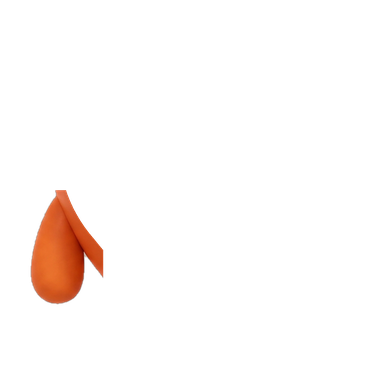
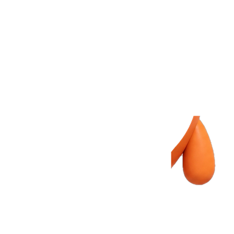
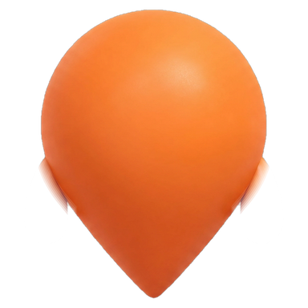

Aİğne düşüşü

Yakınında kim var, keşfet.
Hesap oluştur →
Hesabın var mı? Giriş yap
Harita verisi © OpenStreetMap katkıcıları
Maskot yukarıdan düşer, yere oturunca hafif ezilir; konum halkaları yayılır. En kısa ve en "check-in" olan.
BHarita çizilir
Yakınında kim var, keşfet.
Hesap oluştur →
Hesabın var mı? Giriş yap
Harita verisi © OpenStreetMap katkıcıları
Beyaz ekranda ince yollar çizilir, mekân iğneleri sırayla belirir, maskot ortaya gelir. Uygulamanın "harita" kimliğini öne alır.
CHarf harf
slooin
Yakınında kim var, keşfet.
Hesap oluştur →
Hesabın var mı? Giriş yap
Harita verisi © OpenStreetMap katkıcıları
Marka adı harf harf netleşir; maskot son harflerin arkasından kafasını uzatır. Tipografi odaklı, en sakin olan.
DRadar
EY
MK
AS
DK
Aynı yerde, aynı anda.
Hesap oluştur →
Hesabın var mı? Giriş yap
Harita verisi © OpenStreetMap katkıcıları
Maskottan nabız gibi halkalar yayılır, yakındaki kişiler belirip maskota bağlanır. "Yakınındakilerle tanış" fikrini doğrudan anlatır.
ETuruncu perde



Yakınında kim var, keşfet.
Hesap oluştur →
Hesabın var mı? Giriş yap
Harita verisi © OpenStreetMap katkıcıları
Tam turuncu açılış ve S logosu; perde yukarı kalkar, maskot yürüyerek gelir, ortada durup bize döner ve el sallar. En markalı, en uzun olan.